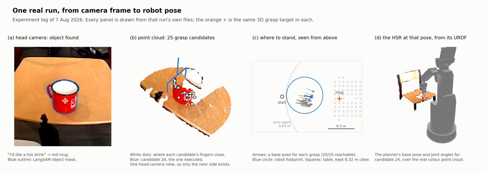
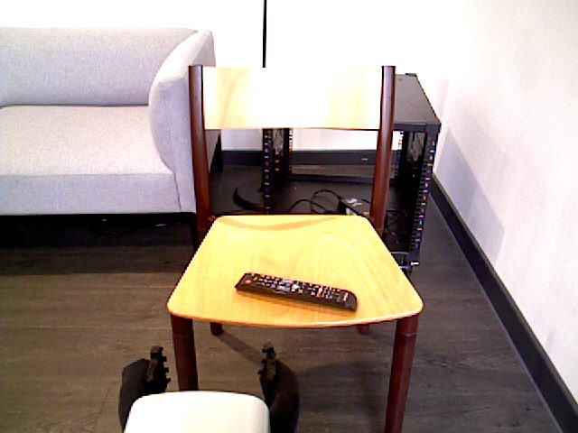
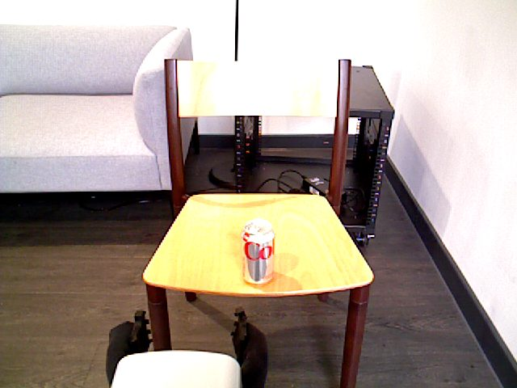
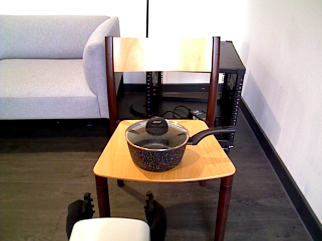
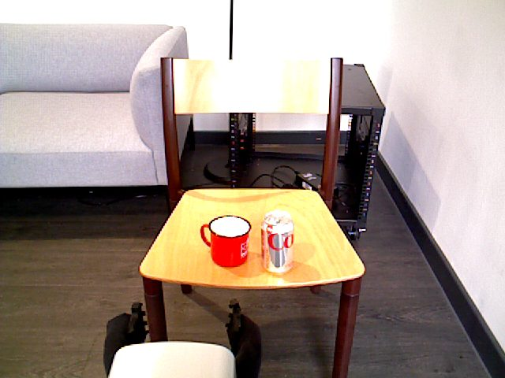
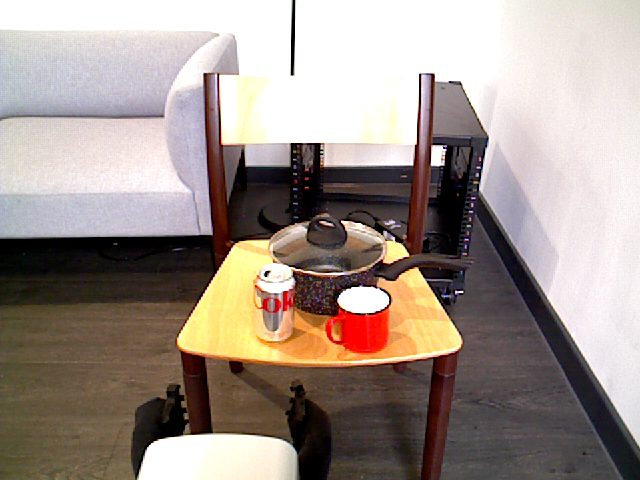
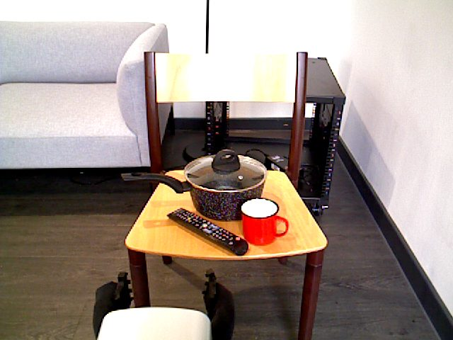
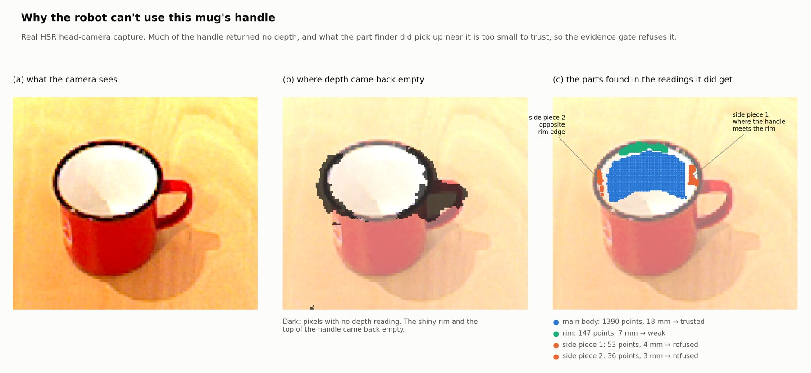
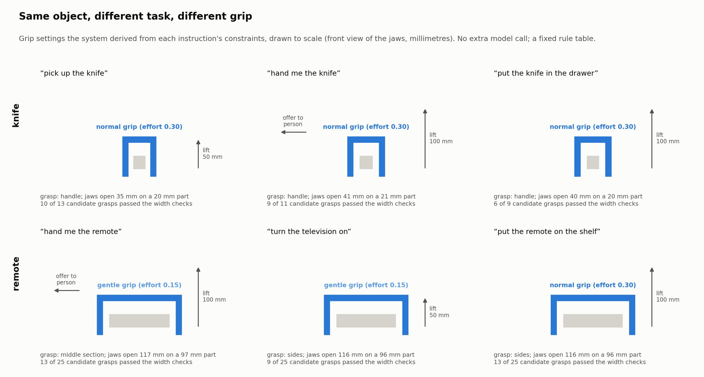

A Toyota HSR that works out what to pick up, and where to hold it, from an instruction that never names the object. It runs on the real robot, not only in simulation.
Most grasping systems are told what to pick up. People don't talk like that.
Say "I'd like a hot drink" and the robot has to work out three things: that the red mug is the object, that the handle is the part to hold, and that the mug may be hot. Then it has to physically do it with a 5-DoF arm that can't reach most grasps from wherever the base happens to be standing.
The starting point was the AffordGrasp paper by Tang et al. (IROS 2025). I reimplemented its reasoning idea, then spent most of the project on the parts that broke when I moved it onto real hardware. This is an independent project and isn't affiliated with the paper's authors.
Perception and the GPT-4o calls run on a Windows PC with a CUDA GPU. Everything that talks to the robot runs on the HSR workstation under ROS Noetic. The two sides exchange .npz files over scp.
GPT-4o reads the instruction and a head-camera image in three steps: what the task needs, which object satisfies it, and which part to grasp. It returns structured JSON with task constraints such as surfaces to keep clear, grip firmness and what happens after the grasp. A contract check re-asks once if the answer contradicts itself.
LangSAM (Grounding DINO + SAM) finds the whole object in the image. It is poor at finding parts, so the part is found geometrically: the object's point cloud is split into structural components like a body, a rim and side protrusions, and the requested part is matched against them.
Contact-GraspNet proposes grasps restricted to the chosen part. The constraints become closing force, cage clearance, close depth and lift height through a fixed rule table, with no second model call.
A collision-aware planner picks a base pose first. Execution then passes through gates: base settled, palm pose checked against forward kinematics, a visual-servo correction, a contact-stop close, and a lift that depth has to confirm before the trial counts.
This is the HSR's own URDF, posed with the base pose and joint angles the planner logged for grasp candidate 24, over the coloured point cloud from that run's head-camera capture. Motion between the recorded stages is interpolated. Drag to orbit, pinch or scroll to zoom.
The red dot is the grasp target the system chose on the mug, with a ring on the floor beneath it.

Real head-camera captures from the HSR. Each scene and instruction pair ran five times, 13 pairs in all. GPT-4o chose the intended object 61 of 65 times (94%).
All four misses happened the same way. With a mug and a pot on the table, step one turned "I'd like a hot drink" into something too general, "a container" three times and "a drink preparation appliance" once, and from there the pot looked like a fine answer.






Everything here was measured on real captures or the real robot, and every chart in the repository is rebuilt from the recorded files.
Asking LangSAM for a part ("handle", "sides", "middle section") gave back a mask covering 86 to 97 percent of the object's own mask. All three knife instructions asked for the handle and all three came back at 97%. In the logged knife image, the "handle" mask sits on the blade.
Share of the object mask covered by the "part" mask. The line at the end of each track is 100%, the whole object.
This is the project's central result. The language model names part-level constraints that appearance-based segmentation cannot resolve, so the reasoning layer can express finer distinctions than the perception layer can deliver. Decomposing the point cloud geometrically recovers the part structure that grounding misses.
On the mug, the shiny rim and the top of the handle return no depth at all. The part finder still picks up two small pieces, one where the handle meets the rim and one on the opposite edge. At 53 and 36 points they fall under the 60-point, 6 mm evidence gate, so the robot refuses them instead of guessing.

Moving the camera closer helps where the sensor is the bottleneck. Re-running the decomposition on near captures turned the knife's and the remote's smallest parts from weak into trusted, and found the pot that the far view missed. The mug didn't improve, because its problem is missing depth, not distance.
In the first version of the part prompt, "hand me the X" picked the handle for 4 of the 6 objects. For a knife, that means offering the blade to the person. Adding one paragraph asking the model to think about the person receiving the object changed the grasped part for 4 of the 6.
| Object | First prompt grasps | Receiver-aware prompt grasps | Keeps clear for the person |
|---|---|---|---|
| Knife | Handle | Blade spine | Handle |
| Mug | Handle | Body | Handle |
| Hammer | Handle | Head | Handle |
| Bottle | Neck | Body | Neck |
| Bowl | Rim | Rim | Interior |
| Pan | Handle | Handle | Handle |
The pan still contradicts itself: it grasps the handle and also says to keep the handle clear. I left it in because it shows the contract check doesn't catch everything.
The constraints set how hard the gripper squeezes, how far it lifts and whether it turns to offer the object afterwards. The knife lifts twice as high when it's handed over or put away as when it's just picked up. The remote gets a gentler grip when it's being used or handed over than when it goes on a shelf.

Of 11 logged trials, 8 grasped and lifted the mug. The four trials on 1 August ran fully autonomously and all succeeded, with lift heights within 0.4 mm of each other (0.1416 to 0.1420 m). In trial 9 the visual servo brought the gripper from 46.9 px to 12.7 px off target before closing.
Trial 8 has no record in the log. I left the gap rather than renumbering. Before base placement, none of the 25 grasp candidates on the recorded run was reachable from the starting pose; after it, all 25 were.
From the project's failure register. Each row traces back to a specific log, trial or line of code.
| What went wrong | What changed | Re-tested on the robot |
|---|---|---|
| During multi-view capture the arm rose while still folded, then unfolded in the wrong order | Fold and unfold reordered in the capture scripts | No separate re-test |
| Wrist commands at the URDF limit (−1.92 rad) were silently rejected by the controller | Wrist flex clamped to −1.90 rad; abort with under 3 cm of lift headroom | No separate re-test |
| Odometry reset without warning and a stale reference file drove the base toward the table | Guard that aborts when the reference is stale or near zero | Yes, trial 6 |
| Closing the gripper to a fixed position over-currented the motor against a held object | The gripper now stops closing on contact | No separate re-test |
| Command latency on the first close step looked like contact | Contact only counts after real finger travel | No separate re-test |
| Trial 4: the mug was held but the lift faulted on over-current | Stop earlier when resistance appears, plus a hold-margin option | Yes, trial 5 |
| On 1 August the arm-tuck move used before captures drove the arm into the floor | That script was retired and the capture scripts skip it | Not applicable |
Trials 1 and 3 ended in aborts whose cause I never confirmed, so they stay marked as open.
After the arm hit the floor, I wrote the lab safety protocol the project now runs under. No hand-authored arm pose runs until a checker has tested it against the robot's URDF for joint limits, floor clearance (the lowest link must stay above 0.12 m) and a keep-out sphere around the head.
Next, I want to implement the axis-sign fix, run full grasp execution in clutter and on more objects, and capture parts from closer viewpoints where the sensor allows.
Credits: Tang et al., AffordGrasp (IROS 2025) for the three-step reasoning idea. Contact-GraspNet (NVIDIA) through a PyTorch port, LangSAM, and the YCB object set. HSR model from Toyota's hsr_description (BSD licence) and hsr_meshes (CC BY-NC-ND 4.0), used unmodified.